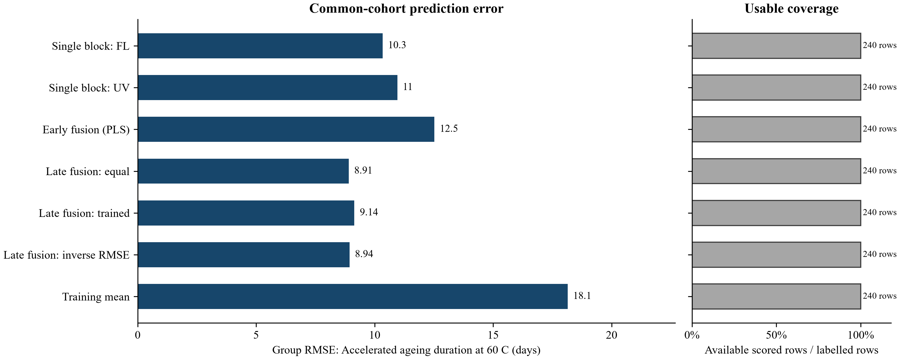
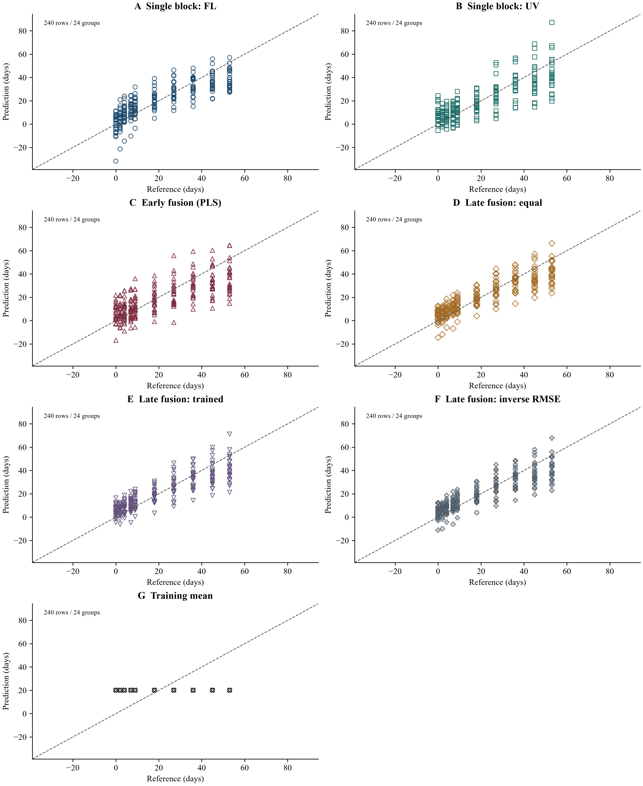
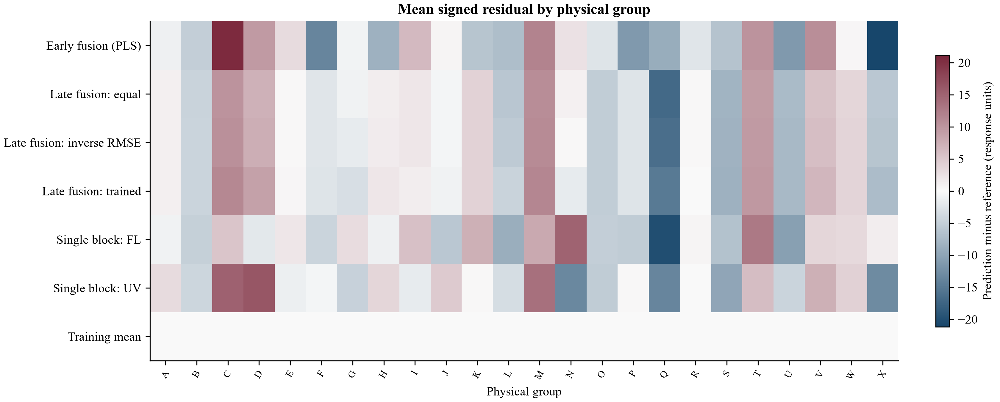
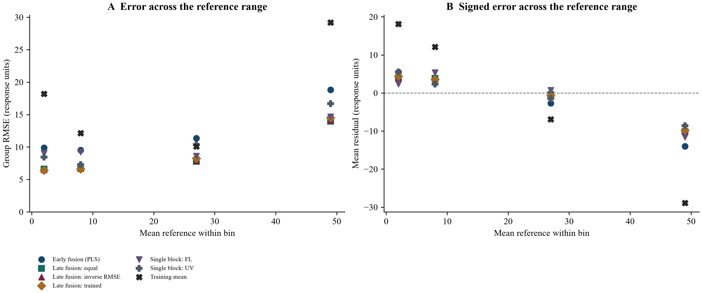
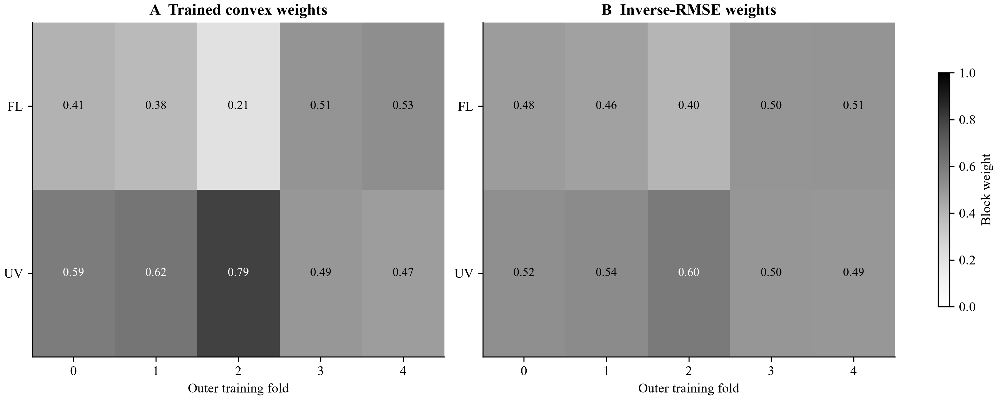
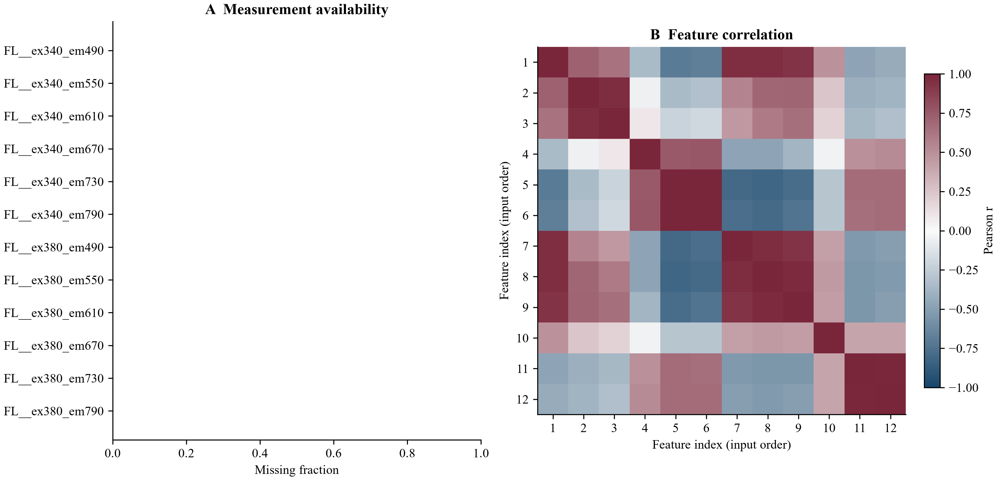

Input: olive_fusion.csv; 240 rows. Computation completed; evidence availability: complete.
Target: Accelerated ageing duration at 60 C (days). Errors use held-out physical groups; comparisons use the stated common cohort.
all methods: lowest displayed group RMSE = 8.90911 for Late fusion (equal weights), on 240 rows / 24 groups. This ranking is descriptive and may change on new data.

Figure 1. Group-weighted RMSE on the same scored observations for every eligible method. Excluded methods remain identified in tables. Weights and component choices are learned inside the training folds; lower error is better. Prediction coverage is reported separately.

Prediction diagnostics. Accelerated ageing duration at 60 C (days). Identical axes across methods; each point is a scored observation. Dashed line is identity. For nine or fewer rows, the two largest absolute errors are labelled; all identifiers remain in predictions.csv. No fit line, replicate uncertainty or additional validation is implied.

Mean signed errors per physical group. Positive means overprediction; the symmetric scale is centred at zero. The first 30 sorted groups are shown when necessary; group_diagnostics.csv retains every group. Group means can hide within-group variation.

Up to four shared quantile bins are used after prediction, for diagnosis only. Dots are bin summaries, not a fitted trend. Bin and physical-group counts are in reference_range_diagnostics.csv; sparse bins do not establish a stable error profile.

Each cell is a weight learned using only that outer fold's training data and nested out-of-fold predictions. Folds are categorical. Variation is descriptive; weights are not causal sensor importance. Exact components and fallbacks remain in fitted_choices.csv.

First 12 selected features in input order, without choosing them for apparent association. Correlations use available row pairs, with at least three pairs; blank cells are unavailable. Repeated observations can drive associations. Full availability statistics and preview feature names are exported; this view does not select model features.
Part 1/2.
| model | cohort | n | n_groups | coverage | rmse |
|---|---|---|---|---|---|
| Single block: FL | all_available_rows | 240 | 24 | 1 | 10.3364 |
| Single block: FL | common_scored_rows | 240 | 24 | 1 | 10.3364 |
| Single block: UV | all_available_rows | 240 | 24 | 1 | 10.9562 |
| Single block: UV | common_scored_rows | 240 | 24 | 1 | 10.9562 |
| Early fusion (PLS) | all_available_rows | 240 | 24 | 1 | 12.5193 |
| Early fusion (PLS) | common_scored_rows | 240 | 24 | 1 | 12.5193 |
| Late fusion (equal weights) | all_available_rows | 240 | 24 | 1 | 8.90911 |
| Late fusion (equal weights) | common_scored_rows | 240 | 24 | 1 | 8.90911 |
| Late fusion (trained weights) | all_available_rows | 240 | 24 | 1 | 9.14477 |
| Late fusion (trained weights) | common_scored_rows | 240 | 24 | 1 | 9.14477 |
| Late fusion (inverse RMSE) | all_available_rows | 240 | 24 | 1 | 8.93983 |
| Late fusion (inverse RMSE) | common_scored_rows | 240 | 24 | 1 | 8.93983 |
| Training mean | all_available_rows | 240 | 24 | 1 | 18.1463 |
| Training mean | common_scored_rows | 240 | 24 | 1 | 18.1463 |
Part 2/2.
| model | mae | bias | r2 | group_rmse |
|---|---|---|---|---|
| Single block: FL | 8.11131 | -0.334574 | 0.67554 | 10.3364 |
| Single block: FL | 8.11131 | -0.334574 | 0.67554 | 10.3364 |
| Single block: UV | 8.39031 | -0.0544656 | 0.635466 | 10.9562 |
| Single block: UV | 8.39031 | -0.0544656 | 0.635466 | 10.9562 |
| Early fusion (PLS) | 9.78462 | -1.30985 | 0.524031 | 12.5193 |
| Early fusion (PLS) | 9.78462 | -1.30985 | 0.524031 | 12.5193 |
| Late fusion (equal weights) | 6.94527 | -0.19452 | 0.758959 | 8.90911 |
| Late fusion (equal weights) | 6.94527 | -0.19452 | 0.758959 | 8.90911 |
| Late fusion (trained weights) | 7.04005 | -0.127855 | 0.746039 | 9.14477 |
| Late fusion (trained weights) | 7.04005 | -0.127855 | 0.746039 | 9.14477 |
| Late fusion (inverse RMSE) | 6.93597 | -0.157449 | 0.757294 | 8.93983 |
| Late fusion (inverse RMSE) | 6.93597 | -0.157449 | 0.757294 | 8.93983 |
| Training mean | 16.12 | -1.89478e-15 | 0 | 18.1463 |
| Training mean | 16.12 | -1.89478e-15 | 0 | 18.1463 |
Complete tables are supplied as CSV; previews below retain the stated row and column limits.
Showing 12 of 48 rows; the complete table is in input_audit.csv.
| column | missing_cells | observed_cells | unique_observed |
|---|---|---|---|
| sample_id | 0 | 240 | 240 |
| group | 0 | 240 | 24 |
| target | 0 | 240 | 10 |
| FL__ex340_em490 | 0 | 240 | 240 |
| FL__ex340_em550 | 0 | 240 | 240 |
| FL__ex340_em610 | 0 | 240 | 240 |
| FL__ex340_em670 | 0 | 240 | 240 |
| FL__ex340_em730 | 0 | 240 | 240 |
| FL__ex340_em790 | 0 | 240 | 240 |
| FL__ex380_em490 | 0 | 240 | 240 |
| FL__ex380_em550 | 0 | 240 | 240 |
| FL__ex380_em610 | 0 | 240 | 240 |
Showing 24 of 1680 rows; the complete table is in predictions.csv.
Part 1/2.
| sample_id | group | fold | model | reference | prediction |
|---|---|---|---|---|---|
| AS0_A0 | A | 3 | Single block: FL | 0 | 0.962711 |
| AS0_B2 | B | 2 | Single block: FL | 0 | -7.65301 |
| AS0_C2 | C | 1 | Single block: FL | 0 | 3.55083 |
| AS0_D2 | D | 0 | Single block: FL | 0 | -3.27859 |
| AS0_E2 | E | 4 | Single block: FL | 0 | 3.45412 |
| AS0_F0 | F | 3 | Single block: FL | 0 | 0.549636 |
| AS0_G1 | G | 2 | Single block: FL | 0 | 6.36066 |
| AS0_H2 | H | 1 | Single block: FL | 0 | 3.3715 |
| AS0_I0 | I | 0 | Single block: FL | 0 | 7.30386 |
| AS0_J2 | J | 4 | Single block: FL | 0 | -4.32738 |
| AS0_K2 | K | 3 | Single block: FL | 0 | 4.24422 |
| AS0_L2 | L | 2 | Single block: FL | 0 | -10.7003 |
| AS0_M0 | M | 1 | Single block: FL | 0 | 10.8344 |
| AS0_N0 | N | 0 | Single block: FL | 0 | 11.2211 |
| AS0_O0 | O | 4 | Single block: FL | 0 | -1.49252 |
| AS0_P2 | P | 3 | Single block: FL | 0 | -7.40995 |
| AS0_Q1 | Q | 2 | Single block: FL | 0 | -31.7146 |
| AS0_R2 | R | 1 | Single block: FL | 0 | 5.75332 |
| AS0_S0 | S | 0 | Single block: FL | 0 | -9.80997 |
| AS0_T1 | T | 4 | Single block: FL | 0 | 8.16278 |
| AS0_U0 | U | 3 | Single block: FL | 0 | -6.67033 |
| AS0_V1 | V | 2 | Single block: FL | 0 | -1.45134 |
| AS0_W2 | W | 1 | Single block: FL | 0 | 6.0612 |
| AS0_X0 | X | 0 | Single block: FL | 0 | 8.25427 |
Part 2/2.
| sample_id | residual | evaluation | in_common_cohort |
|---|---|---|---|
| AS0_A0 | 0.962711 | out_of_fold | True |
| AS0_B2 | -7.65301 | out_of_fold | True |
| AS0_C2 | 3.55083 | out_of_fold | True |
| AS0_D2 | -3.27859 | out_of_fold | True |
| AS0_E2 | 3.45412 | out_of_fold | True |
| AS0_F0 | 0.549636 | out_of_fold | True |
| AS0_G1 | 6.36066 | out_of_fold | True |
| AS0_H2 | 3.3715 | out_of_fold | True |
| AS0_I0 | 7.30386 | out_of_fold | True |
| AS0_J2 | -4.32738 | out_of_fold | True |
| AS0_K2 | 4.24422 | out_of_fold | True |
| AS0_L2 | -10.7003 | out_of_fold | True |
| AS0_M0 | 10.8344 | out_of_fold | True |
| AS0_N0 | 11.2211 | out_of_fold | True |
| AS0_O0 | -1.49252 | out_of_fold | True |
| AS0_P2 | -7.40995 | out_of_fold | True |
| AS0_Q1 | -31.7146 | out_of_fold | True |
| AS0_R2 | 5.75332 | out_of_fold | True |
| AS0_S0 | -9.80997 | out_of_fold | True |
| AS0_T1 | 8.16278 | out_of_fold | True |
| AS0_U0 | -6.67033 | out_of_fold | True |
| AS0_V1 | -1.45134 | out_of_fold | True |
| AS0_W2 | 6.0612 | out_of_fold | True |
| AS0_X0 | 8.25427 | out_of_fold | True |
Part 1/2.
| fold | block | components | estimator | weight | weight_method |
|---|---|---|---|---|---|
| 0 | FL | 3 | PLS | 0.406612 | nonnegative sum-to-one weights learned from nested grouped out-of-fold training predictions |
| 0 | UV | 2 | PLS | 0.593388 | nonnegative sum-to-one weights learned from nested grouped out-of-fold training predictions |
| 1 | FL | 3 | PLS | 0.38301 | nonnegative sum-to-one weights learned from nested grouped out-of-fold training predictions |
| 1 | UV | 3 | PLS | 0.61699 | nonnegative sum-to-one weights learned from nested grouped out-of-fold training predictions |
| 2 | FL | 3 | PLS | 0.205562 | nonnegative sum-to-one weights learned from nested grouped out-of-fold training predictions |
| 2 | UV | 2 | PLS | 0.794438 | nonnegative sum-to-one weights learned from nested grouped out-of-fold training predictions |
| 3 | FL | 3 | PLS | 0.507045 | nonnegative sum-to-one weights learned from nested grouped out-of-fold training predictions |
| 3 | UV | 2 | PLS | 0.492955 | nonnegative sum-to-one weights learned from nested grouped out-of-fold training predictions |
| 4 | FL | 3 | PLS | 0.525914 | nonnegative sum-to-one weights learned from nested grouped out-of-fold training predictions |
| 4 | UV | 2 | PLS | 0.474086 | nonnegative sum-to-one weights learned from nested grouped out-of-fold training predictions |
Part 2/2.
| fold | inverse_rmse_weight | inverse_rmse_weight_method | early_components | early_estimator |
|---|---|---|---|---|
| 0 | 0.479884 | normalized inverse grouped RMSE from shared nested out-of-fold training predictions; exact-zero errors share all weight | 3 | PLS |
| 0 | 0.520116 | normalized inverse grouped RMSE from shared nested out-of-fold training predictions; exact-zero errors share all weight | 3 | PLS |
| 1 | 0.462997 | normalized inverse grouped RMSE from shared nested out-of-fold training predictions; exact-zero errors share all weight | 3 | PLS |
| 1 | 0.537003 | normalized inverse grouped RMSE from shared nested out-of-fold training predictions; exact-zero errors share all weight | 3 | PLS |
| 2 | 0.401552 | normalized inverse grouped RMSE from shared nested out-of-fold training predictions; exact-zero errors share all weight | 1 | PLS |
| 2 | 0.598448 | normalized inverse grouped RMSE from shared nested out-of-fold training predictions; exact-zero errors share all weight | 1 | PLS |
| 3 | 0.501812 | normalized inverse grouped RMSE from shared nested out-of-fold training predictions; exact-zero errors share all weight | 1 | PLS |
| 3 | 0.498188 | normalized inverse grouped RMSE from shared nested out-of-fold training predictions; exact-zero errors share all weight | 1 | PLS |
| 4 | 0.507196 | normalized inverse grouped RMSE from shared nested out-of-fold training predictions; exact-zero errors share all weight | 1 | PLS |
| 4 | 0.492804 | normalized inverse grouped RMSE from shared nested out-of-fold training predictions; exact-zero errors share all weight | 1 | PLS |
Showing 12 of 1200 rows; the complete table is in splits.csv.
| fold | role | sample_id | group | evaluation_group |
|---|---|---|---|---|
| 0 | train | AS0_A0 | A | A |
| 0 | train | AS0_B2 | B | B |
| 0 | train | AS0_C2 | C | C |
| 0 | train | AS0_E2 | E | E |
| 0 | train | AS0_F0 | F | F |
| 0 | train | AS0_G1 | G | G |
| 0 | train | AS0_H2 | H | H |
| 0 | train | AS0_J2 | J | J |
| 0 | train | AS0_K2 | K | K |
| 0 | train | AS0_L2 | L | L |
| 0 | train | AS0_M0 | M | M |
| 0 | train | AS0_O0 | O | O |
Showing 24 of 45 rows; the complete table is in feature_quality.csv.
Part 1/2.
| feature | observed_rows | missing_fraction | minimum | median | maximum |
|---|---|---|---|---|---|
| FL__ex340_em490 | 240 | 0 | 4.53253 | 14.5165 | 33.2468 |
| FL__ex340_em550 | 240 | 0 | 12.0663 | 20.4552 | 29.0724 |
| FL__ex340_em610 | 240 | 0 | 3.75114 | 6.15068 | 8.98839 |
| FL__ex340_em670 | 240 | 0 | 5.32656 | 9.68085 | 26.3867 |
| FL__ex340_em730 | 240 | 0 | 5.77627 | 15.6204 | 33.445 |
| FL__ex340_em790 | 240 | 0 | 0.480276 | 1.27205 | 2.6492 |
| FL__ex380_em490 | 240 | 0 | 1.39486 | 7.97492 | 27.9058 |
| FL__ex380_em550 | 240 | 0 | 5.02471 | 13.2183 | 28.3236 |
| FL__ex380_em610 | 240 | 0 | 2.0923 | 5.28152 | 11.8143 |
| FL__ex380_em670 | 240 | 0 | 98.3161 | 199.307 | 263.235 |
| FL__ex380_em730 | 240 | 0 | 35.2645 | 64.2082 | 80.5384 |
| FL__ex380_em790 | 240 | 0 | 1.78532 | 3.17379 | 3.98117 |
| FL__ex420_em490 | 240 | 0 | 0.0865157 | 0.972147 | 5.73884 |
| FL__ex420_em550 | 240 | 0 | 0.337309 | 1.99407 | 7.47617 |
| FL__ex420_em610 | 240 | 0 | 0.3234 | 1.35299 | 7.07167 |
| FL__ex420_em670 | 240 | 0 | 51.7331 | 174.114 | 300.189 |
| FL__ex420_em730 | 240 | 0 | 22.3657 | 46.3962 | 66.8409 |
| FL__ex420_em790 | 240 | 0 | 1.80304 | 3.69599 | 5.2045 |
| FL__ex460_em490 | 240 | 0 | 0.114927 | 0.80726 | 3.24936 |
| FL__ex460_em550 | 240 | 0 | 0.605542 | 2.42957 | 6.76785 |
| FL__ex460_em610 | 240 | 0 | 0.404944 | 1.28804 | 3.68774 |
| FL__ex460_em670 | 240 | 0 | 7.82451 | 17.9103 | 30.2875 |
| FL__ex460_em730 | 240 | 0 | 2.3444 | 4.69903 | 8.63182 |
| FL__ex460_em790 | 240 | 0 | 0.217735 | 0.414259 | 0.810391 |
Part 2/2.
| feature | distinct_values |
|---|---|
| FL__ex340_em490 | 240 |
| FL__ex340_em550 | 240 |
| FL__ex340_em610 | 240 |
| FL__ex340_em670 | 240 |
| FL__ex340_em730 | 240 |
| FL__ex340_em790 | 240 |
| FL__ex380_em490 | 240 |
| FL__ex380_em550 | 240 |
| FL__ex380_em610 | 240 |
| FL__ex380_em670 | 240 |
| FL__ex380_em730 | 240 |
| FL__ex380_em790 | 240 |
| FL__ex420_em490 | 240 |
| FL__ex420_em550 | 240 |
| FL__ex420_em610 | 240 |
| FL__ex420_em670 | 240 |
| FL__ex420_em730 | 240 |
| FL__ex420_em790 | 240 |
| FL__ex460_em490 | 240 |
| FL__ex460_em550 | 240 |
| FL__ex460_em610 | 240 |
| FL__ex460_em670 | 240 |
| FL__ex460_em730 | 240 |
| FL__ex460_em790 | 240 |
Part 1/3.
| feature | FL__ex340_em490 | FL__ex340_em550 | FL__ex340_em610 | FL__ex340_em670 | FL__ex340_em730 |
|---|---|---|---|---|---|
| FL__ex340_em490 | 1 | 0.718311 | 0.634183 | -0.345009 | -0.701458 |
| FL__ex340_em550 | 0.718311 | 1 | 0.968628 | -0.053932 | -0.344263 |
| FL__ex340_em610 | 0.634183 | 0.968628 | 1 | 0.090986 | -0.21277 |
| FL__ex340_em670 | -0.345009 | -0.053932 | 0.090986 | 1 | 0.757343 |
| FL__ex340_em730 | -0.701458 | -0.344263 | -0.21277 | 0.757343 | 1 |
| FL__ex340_em790 | -0.672475 | -0.319647 | -0.181149 | 0.761992 | 0.994782 |
| FL__ex380_em490 | 0.956848 | 0.553835 | 0.456139 | -0.471373 | -0.797105 |
| FL__ex380_em550 | 0.955455 | 0.690905 | 0.598008 | -0.472373 | -0.818323 |
| FL__ex380_em610 | 0.934802 | 0.6988 | 0.653817 | -0.379337 | -0.773597 |
| FL__ex380_em670 | 0.486128 | 0.248746 | 0.182877 | -0.0425533 | -0.294653 |
| FL__ex380_em730 | -0.469973 | -0.411954 | -0.366387 | 0.49274 | 0.665614 |
| FL__ex380_em790 | -0.436442 | -0.389318 | -0.327004 | 0.518566 | 0.66945 |
Part 2/3.
| feature | FL__ex340_em790 | FL__ex380_em490 | FL__ex380_em550 | FL__ex380_em610 | FL__ex380_em670 |
|---|---|---|---|---|---|
| FL__ex340_em490 | -0.672475 | 0.956848 | 0.955455 | 0.934802 | 0.486128 |
| FL__ex340_em550 | -0.319647 | 0.553835 | 0.690905 | 0.6988 | 0.248746 |
| FL__ex340_em610 | -0.181149 | 0.456139 | 0.598008 | 0.653817 | 0.182877 |
| FL__ex340_em670 | 0.761992 | -0.471373 | -0.472373 | -0.379337 | -0.0425533 |
| FL__ex340_em730 | 0.994782 | -0.797105 | -0.818323 | -0.773597 | -0.294653 |
| FL__ex340_em790 | 1 | -0.772884 | -0.792692 | -0.740968 | -0.290686 |
| FL__ex380_em490 | -0.772884 | 1 | 0.966375 | 0.930853 | 0.429042 |
| FL__ex380_em550 | -0.792692 | 0.966375 | 1 | 0.975519 | 0.450846 |
| FL__ex380_em610 | -0.740968 | 0.930853 | 0.975519 | 1 | 0.435717 |
| FL__ex380_em670 | -0.290686 | 0.429042 | 0.450846 | 0.435717 | 1 |
| FL__ex380_em730 | 0.653235 | -0.53448 | -0.554173 | -0.549298 | 0.402904 |
| FL__ex380_em790 | 0.668986 | -0.506558 | -0.52439 | -0.503557 | 0.399614 |
Part 3/3.
| feature | FL__ex380_em730 | FL__ex380_em790 |
|---|---|---|
| FL__ex340_em490 | -0.469973 | -0.436442 |
| FL__ex340_em550 | -0.411954 | -0.389318 |
| FL__ex340_em610 | -0.366387 | -0.327004 |
| FL__ex340_em670 | 0.49274 | 0.518566 |
| FL__ex340_em730 | 0.665614 | 0.66945 |
| FL__ex340_em790 | 0.653235 | 0.668986 |
| FL__ex380_em490 | -0.53448 | -0.506558 |
| FL__ex380_em550 | -0.554173 | -0.52439 |
| FL__ex380_em610 | -0.549298 | -0.503557 |
| FL__ex380_em670 | 0.402904 | 0.399614 |
| FL__ex380_em730 | 1 | 0.984428 |
| FL__ex380_em790 | 0.984428 | 1 |
Showing 24 of 168 rows; the complete table is in group_diagnostics.csv.
Part 1/2.
| model | group | n | reference_mean | prediction_mean | rmse |
|---|---|---|---|---|---|
| Early fusion (PLS) | A | 10 | 20.1 | 18.9738 | 10.6661 |
| Early fusion (PLS) | B | 10 | 20.1 | 15.0302 | 9.97441 |
| Early fusion (PLS) | C | 10 | 20.1 | 40.6764 | 21.1397 |
| Early fusion (PLS) | D | 10 | 20.1 | 29.6658 | 10.4424 |
| Early fusion (PLS) | E | 10 | 20.1 | 23.0993 | 9.40862 |
| Early fusion (PLS) | F | 10 | 20.1 | 6.37339 | 16.9655 |
| Early fusion (PLS) | G | 10 | 20.1 | 19.4057 | 7.7871 |
| Early fusion (PLS) | H | 10 | 20.1 | 11.5444 | 10.1309 |
| Early fusion (PLS) | I | 10 | 20.1 | 26.4503 | 7.36482 |
| Early fusion (PLS) | J | 10 | 20.1 | 20.6235 | 11.2509 |
| Early fusion (PLS) | K | 10 | 20.1 | 13.8304 | 11.6574 |
| Early fusion (PLS) | L | 10 | 20.1 | 13.0104 | 13.3209 |
| Early fusion (PLS) | M | 10 | 20.1 | 31.9927 | 12.0885 |
| Early fusion (PLS) | N | 10 | 20.1 | 22.4436 | 7.25835 |
| Early fusion (PLS) | O | 10 | 20.1 | 17.4893 | 6.3943 |
| Early fusion (PLS) | P | 10 | 20.1 | 8.83101 | 14.8145 |
| Early fusion (PLS) | Q | 10 | 20.1 | 11.086 | 11.8882 |
| Early fusion (PLS) | R | 10 | 20.1 | 17.6299 | 5.39665 |
| Early fusion (PLS) | S | 10 | 20.1 | 13.6989 | 10.1314 |
| Early fusion (PLS) | T | 10 | 20.1 | 30.2887 | 14.6237 |
| Early fusion (PLS) | U | 10 | 20.1 | 8.69186 | 14.9449 |
| Early fusion (PLS) | V | 10 | 20.1 | 30.7271 | 14.6784 |
| Early fusion (PLS) | W | 10 | 20.1 | 20.4716 | 5.8522 |
| Early fusion (PLS) | X | 10 | 20.1 | -1.07096 | 23.2252 |
Part 2/2.
| model | mae | bias |
|---|---|---|
| Early fusion (PLS) | 8.42925 | -1.12616 |
| Early fusion (PLS) | 6.95819 | -5.0698 |
| Early fusion (PLS) | 20.5764 | 20.5764 |
| Early fusion (PLS) | 9.56577 | 9.56577 |
| Early fusion (PLS) | 8.25923 | 2.99934 |
| Early fusion (PLS) | 13.7266 | -13.7266 |
| Early fusion (PLS) | 6.37408 | -0.694298 |
| Early fusion (PLS) | 9.08489 | -8.55555 |
| Early fusion (PLS) | 6.67541 | 6.35032 |
| Early fusion (PLS) | 9.58159 | 0.523512 |
| Early fusion (PLS) | 8.42757 | -6.2696 |
| Early fusion (PLS) | 9.23581 | -7.08962 |
| Early fusion (PLS) | 11.8927 | 11.8927 |
| Early fusion (PLS) | 6.78016 | 2.34356 |
| Early fusion (PLS) | 4.99603 | -2.61066 |
| Early fusion (PLS) | 11.269 | -11.269 |
| Early fusion (PLS) | 9.07317 | -9.01396 |
| Early fusion (PLS) | 3.92383 | -2.47008 |
| Early fusion (PLS) | 7.22326 | -6.40106 |
| Early fusion (PLS) | 12.3591 | 10.1887 |
| Early fusion (PLS) | 11.7507 | -11.4081 |
| Early fusion (PLS) | 13.1926 | 10.6271 |
| Early fusion (PLS) | 4.30462 | 0.371617 |
| Early fusion (PLS) | 21.171 | -21.171 |
Showing 24 of 28 rows; the complete table is in reference_range_diagnostics.csv.
Part 1/2.
| model | reference_bin | lower_reference | upper_reference | reference_mean | n |
|---|---|---|---|---|---|
| Early fusion (PLS) | 0 | 0 | 4 | 2 | 72 |
| Early fusion (PLS) | 1 | 4 | 13.5 | 8 | 48 |
| Early fusion (PLS) | 2 | 13.5 | 36 | 27 | 72 |
| Early fusion (PLS) | 3 | 36 | 53 | 49 | 48 |
| Late fusion (equal weights) | 0 | 0 | 4 | 2 | 72 |
| Late fusion (equal weights) | 1 | 4 | 13.5 | 8 | 48 |
| Late fusion (equal weights) | 2 | 13.5 | 36 | 27 | 72 |
| Late fusion (equal weights) | 3 | 36 | 53 | 49 | 48 |
| Late fusion (inverse RMSE) | 0 | 0 | 4 | 2 | 72 |
| Late fusion (inverse RMSE) | 1 | 4 | 13.5 | 8 | 48 |
| Late fusion (inverse RMSE) | 2 | 13.5 | 36 | 27 | 72 |
| Late fusion (inverse RMSE) | 3 | 36 | 53 | 49 | 48 |
| Late fusion (trained weights) | 0 | 0 | 4 | 2 | 72 |
| Late fusion (trained weights) | 1 | 4 | 13.5 | 8 | 48 |
| Late fusion (trained weights) | 2 | 13.5 | 36 | 27 | 72 |
| Late fusion (trained weights) | 3 | 36 | 53 | 49 | 48 |
| Single block: FL | 0 | 0 | 4 | 2 | 72 |
| Single block: FL | 1 | 4 | 13.5 | 8 | 48 |
| Single block: FL | 2 | 13.5 | 36 | 27 | 72 |
| Single block: FL | 3 | 36 | 53 | 49 | 48 |
| Single block: UV | 0 | 0 | 4 | 2 | 72 |
| Single block: UV | 1 | 4 | 13.5 | 8 | 48 |
| Single block: UV | 2 | 13.5 | 36 | 27 | 72 |
| Single block: UV | 3 | 36 | 53 | 49 | 48 |
Part 2/2.
| model | n_groups | rmse | group_rmse | bias |
|---|---|---|---|---|
| Early fusion (PLS) | 24 | 9.86955 | 9.86955 | 5.44955 |
| Early fusion (PLS) | 24 | 9.51558 | 9.51558 | 3.3233 |
| Early fusion (PLS) | 24 | 11.3531 | 11.3531 | -2.67754 |
| Early fusion (PLS) | 24 | 18.8059 | 18.8059 | -14.0306 |
| Late fusion (equal weights) | 24 | 6.62119 | 6.62119 | 3.91578 |
| Late fusion (equal weights) | 24 | 6.7159 | 6.7159 | 3.83702 |
| Late fusion (equal weights) | 24 | 7.79363 | 7.79363 | -0.380488 |
| Late fusion (equal weights) | 24 | 13.9602 | 13.9602 | -10.1126 |
| Late fusion (inverse RMSE) | 24 | 6.48836 | 6.48836 | 4.09563 |
| Late fusion (inverse RMSE) | 24 | 6.66004 | 6.66004 | 3.76805 |
| Late fusion (inverse RMSE) | 24 | 7.89351 | 7.89351 | -0.456013 |
| Late fusion (inverse RMSE) | 24 | 14.0939 | 14.0939 | -10.0147 |
| Late fusion (trained weights) | 24 | 6.42789 | 6.42789 | 4.43042 |
| Late fusion (trained weights) | 24 | 6.61334 | 6.61334 | 3.55013 |
| Late fusion (trained weights) | 24 | 8.24016 | 8.24016 | -0.661775 |
| Late fusion (trained weights) | 24 | 14.5111 | 14.5111 | -9.84237 |
| Single block: FL | 24 | 9.04383 | 9.04383 | 2.33951 |
| Single block: FL | 24 | 9.23687 | 9.23687 | 5.34912 |
| Single block: FL | 24 | 8.60061 | 8.60061 | 0.71821 |
| Single block: FL | 24 | 14.6713 | 14.6713 | -11.6086 |
| Single block: UV | 24 | 8.44027 | 8.44027 | 5.49205 |
| Single block: UV | 24 | 7.30434 | 7.30434 | 2.32492 |
| Single block: UV | 24 | 10.3679 | 10.3679 | -1.47919 |
| Single block: UV | 24 | 16.6954 | 16.6954 | -8.61654 |
Part 1/2.
| model | baseline | paired_rows | paired_groups | method_group_rmse | baseline_group_rmse |
|---|---|---|---|---|---|
| Early fusion (PLS) | training_mean | 240 | 24 | 12.5193 | 18.1463 |
| Late fusion (equal weights) | training_mean | 240 | 24 | 8.90911 | 18.1463 |
| Late fusion (inverse RMSE) | training_mean | 240 | 24 | 8.93983 | 18.1463 |
| Late fusion (trained weights) | training_mean | 240 | 24 | 9.14477 | 18.1463 |
| Single block: FL | training_mean | 240 | 24 | 10.3364 | 18.1463 |
| Single block: UV | training_mean | 240 | 24 | 10.9562 | 18.1463 |
Part 2/2.
| model | delta_group_rmse | interpretation |
|---|---|---|
| Early fusion (PLS) | -5.62709 | negative difference favours the method on this paired subset |
| Late fusion (equal weights) | -9.23724 | negative difference favours the method on this paired subset |
| Late fusion (inverse RMSE) | -9.20652 | negative difference favours the method on this paired subset |
| Late fusion (trained weights) | -9.00158 | negative difference favours the method on this paired subset |
| Single block: FL | -7.80993 | negative difference favours the method on this paired subset |
| Single block: UV | -7.19019 | negative difference favours the method on this paired subset |
| capability | available | level | reason |
|---|---|---|---|
| input_quality | True | descriptive | Parsed rows and selected field availability are retained. |
| paired_descriptions | True | descriptive | Available finite reference/comparison pairs; no missing reference is invented. |
| fitted_model | False | fitting | No estimable requested factor model was fitted. |
| held_out_evaluation | True | evaluation | Recorded disjoint training/held-out units; interpret small samples as exploratory. |
| conditional_uncertainty | False | inference | Required independence, variance, sample structure or prediction provenance is unavailable. |
{
"input_sha256": "2aba49c16a51f351fe24e36e80ddfb5a96bff8506b51ce46f165d9951a571019",
"target": "target",
"id": "sample_id",
"group": "group",
"blocks": {
"FL": [
"FL__ex340_em490",
"FL__ex340_em550",
"FL__ex340_em610",
"FL__ex340_em670",
"FL__ex340_em730",
"FL__ex340_em790",
"FL__ex380_em490",
"FL__ex380_em550",
"FL__ex380_em610",
"FL__ex380_em670",
"FL__ex380_em730",
"FL__ex380_em790",
"FL__ex420_em490",
"FL__ex420_em550",
"FL__ex420_em610",
"FL__ex420_em670",
"FL__ex420_em730",
"FL__ex420_em790",
"FL__ex460_em490",
"FL__ex460_em550",
"FL__ex460_em610",
"FL__ex460_em670",
"FL__ex460_em730",
"FL__ex460_em790",
"FL__ex500_em550",
"FL__ex500_em610",
"FL__ex500_em670",
"FL__ex500_em730",
"FL__ex500_em790",
"FL__ex540_em550",
"FL__ex540_em610",
"FL__ex540_em670",
"FL__ex540_em730",
"FL__ex540_em790",
"FL__ex580_em610",
"FL__ex580_em670",
"FL__ex580_em730",
"FL__ex580_em790",
"FL__ex620_em670",
"FL__ex620_em730",
"FL__ex620_em790"
],
"UV": [
"UV__K232",
"UV__K264",
"UV__K268",
"UV__K272"
]
},
"components": [
1,
2,
3
],
"outer_max_folds": 5,
"inner_max_folds": 3,
"common_comparison": {
"n_rows": 240,
"n_groups": 24,
"methods": [
"single_FL",
"single_UV",
"early_pls",
"late_equal",
"late_weighted",
"late_inverse_rmse",
"training_mean"
],
"excluded_methods": [],
"selection_rule": "Exclude methods without any held-out predictions and fusion when fewer than two single blocks are usable; never select by error.",
"status": "available"
},
"n_rows": 240,
"n_labelled": 240,
"n_groups": 24,
"software_source_sha256": "aa59a799ea948799fe43e53338e1aa41de440f5a707708cca9db12bb389e2fc6",
"source_hash_definition": "SHA256 of sorted relative Python paths and file bytes, each terminated by a NUL byte",
"application": "sensefusion",
"software_version": "0.5.2",
"configuration_schema_version": "1.2",
"call_parameters": {
"target": "target",
"id_col": "sample_id",
"group_col": "group",
"block_columns": {
"FL": [
"FL__ex340_em490",
"FL__ex340_em550",
"FL__ex340_em610",
"FL__ex340_em670",
"FL__ex340_em730",
"FL__ex340_em790",
"FL__ex380_em490",
"FL__ex380_em550",
"FL__ex380_em610",
"FL__ex380_em670",
"FL__ex380_em730",
"FL__ex380_em790",
"FL__ex420_em490",
"FL__ex420_em550",
"FL__ex420_em610",
"FL__ex420_em670",
"FL__ex420_em730",
"FL__ex420_em790",
"FL__ex460_em490",
"FL__ex460_em550",
"FL__ex460_em610",
"FL__ex460_em670",
"FL__ex460_em730",
"FL__ex460_em790",
"FL__ex500_em550",
"FL__ex500_em610",
"FL__ex500_em670",
"FL__ex500_em730",
"FL__ex500_em790",
"FL__ex540_em550",
"FL__ex540_em610",
"FL__ex540_em670",
"FL__ex540_em730",
"FL__ex540_em790",
"FL__ex580_em610",
"FL__ex580_em670",
"FL__ex580_em730",
"FL__ex580_em790",
"FL__ex620_em670",
"FL__ex620_em730",
"FL__ex620_em790"
],
"UV": [
"UV__K232",
"UV__K264",
"UV__K268",
"UV__K272"
]
},
"cv_group_col": null,
"column_metadata": {
"target": {
"label": "Accelerated ageing duration at 60 C",
"unit": "days"
}
},
"input_name": "olive_fusion.csv",
"provenance": {
"kind": "bundled_example",
"example": "olive_fusion.csv"
}
},
"input_name": "olive_fusion.csv",
"columns": {
"sample_id": {
"label": "sample_id",
"unit": "not provided"
},
"group": {
"label": "group",
"unit": "not provided"
},
"target": {
"label": "Accelerated ageing duration at 60 C",
"unit": "days"
},
"FL__ex340_em490": {
"label": "FL__ex340_em490",
"unit": "not provided"
},
"FL__ex340_em550": {
"label": "FL__ex340_em550",
"unit": "not provided"
},
"FL__ex340_em610": {
"label": "FL__ex340_em610",
"unit": "not provided"
},
"FL__ex340_em670": {
"label": "FL__ex340_em670",
"unit": "not provided"
},
"FL__ex340_em730": {
"label": "FL__ex340_em730",
"unit": "not provided"
},
"FL__ex340_em790": {
"label": "FL__ex340_em790",
"unit": "not provided"
},
"FL__ex380_em490": {
"label": "FL__ex380_em490",
"unit": "not provided"
},
"FL__ex380_em550": {
"label": "FL__ex380_em550",
"unit": "not provided"
},
"FL__ex380_em610": {
"label": "FL__ex380_em610",
"unit": "not provided"
},
"FL__ex380_em670": {
"label": "FL__ex380_em670",
"unit": "not provided"
},
"FL__ex380_em730": {
"label": "FL__ex380_em730",
"unit": "not provided"
},
"FL__ex380_em790": {
"label": "FL__ex380_em790",
"unit": "not provided"
},
"FL__ex420_em490": {
"label": "FL__ex420_em490",
"unit": "not provided"
},
"FL__ex420_em550": {
"label": "FL__ex420_em550",
"unit": "not provided"
},
"FL__ex420_em610": {
"label": "FL__ex420_em610",
"unit": "not provided"
},
"FL__ex420_em670": {
"label": "FL__ex420_em670",
"unit": "not provided"
},
"FL__ex420_em730": {
"label": "FL__ex420_em730",
"unit": "not provided"
},
"FL__ex420_em790": {
"label": "FL__ex420_em790",
"unit": "not provided"
},
"FL__ex460_em490": {
"label": "FL__ex460_em490",
"unit": "not provided"
},
"FL__ex460_em550": {
"label": "FL__ex460_em550",
"unit": "not provided"
},
"FL__ex460_em610": {
"label": "FL__ex460_em610",
"unit": "not provided"
},
"FL__ex460_em670": {
"label": "FL__ex460_em670",
"unit": "not provided"
},
"FL__ex460_em730": {
"label": "FL__ex460_em730",
"unit": "not provided"
},
"FL__ex460_em790": {
"label": "FL__ex460_em790",
"unit": "not provided"
},
"FL__ex500_em550": {
"label": "FL__ex500_em550",
"unit": "not provided"
},
"FL__ex500_em610": {
"label": "FL__ex500_em610",
"unit": "not provided"
},
"FL__ex500_em670": {
"label": "FL__ex500_em670",
"unit": "not provided"
},
"FL__ex500_em730": {
"label": "FL__ex500_em730",
"unit": "not provided"
},
"FL__ex500_em790": {
"label": "FL__ex500_em790",
"unit": "not provided"
},
"FL__ex540_em550": {
"label": "FL__ex540_em550",
"unit": "not provided"
},
"FL__ex540_em610": {
"label": "FL__ex540_em610",
"unit": "not provided"
},
"FL__ex540_em670": {
"label": "FL__ex540_em670",
"unit": "not provided"
},
"FL__ex540_em730": {
"label": "FL__ex540_em730",
"unit": "not provided"
},
"FL__ex540_em790": {
"label": "FL__ex540_em790",
"unit": "not provided"
},
"FL__ex580_em610": {
"label": "FL__ex580_em610",
"unit": "not provided"
},
"FL__ex580_em670": {
"label": "FL__ex580_em670",
"unit": "not provided"
},
"FL__ex580_em730": {
"label": "FL__ex580_em730",
"unit": "not provided"
},
"FL__ex580_em790": {
"label": "FL__ex580_em790",
"unit": "not provided"
},
"FL__ex620_em670": {
"label": "FL__ex620_em670",
"unit": "not provided"
},
"FL__ex620_em730": {
"label": "FL__ex620_em730",
"unit": "not provided"
},
"FL__ex620_em790": {
"label": "FL__ex620_em790",
"unit": "not provided"
},
"UV__K232": {
"label": "UV__K232",
"unit": "not provided"
},
"UV__K264": {
"label": "UV__K264",
"unit": "not provided"
},
"UV__K268": {
"label": "UV__K268",
"unit": "not provided"
},
"UV__K272": {
"label": "UV__K272",
"unit": "not provided"
}
},
"provenance": {
"kind": "bundled_example",
"example": "olive_fusion.csv",
"original_source": {
"id": "D04",
"repository_id": "g6y69g8gwm",
"version": 1,
"title": "Dataset of Fluorescence EEM and UV Spectroscopy Data of Olive Oils during Ageing",
"creators": [
"Francesca Venturini",
"Silvan Fluri",
"Michael Baumgartner"
],
"doi": "10.17632/g6y69g8gwm.1",
"source_url": "https://data.mendeley.com/datasets/g6y69g8gwm/1",
"license": "CC-BY-4.0",
"license_url": "https://creativecommons.org/licenses/by/4.0/",
"checked_on": "2026-09-07",
"raw_data_included_in_delivery": false,
"downloads": [
{
"file": "Raw_data.zip",
"url": "https://data.mendeley.com/public-files/datasets/g6y69g8gwm/files/c25f8bec-54d2-429d-9cfc-b5bebc4ea81a/file_downloaded",
"bytes": 52441934,
"sha256": "6acdbd0960ed66255e4f1e9b4b6aae224538c988c01dba1d4c8455017c1aff8b"
}
],
"processed_examples_included": true
},
"transformations": "Fixed fluorescence windows and deposited UV features paired by physical vial and ageing step; duplicate fluorescence acquisitions averaged; 240 matched records grouped into 24 oils. Reference is ageing duration at 60 C, not shelf life.",
"column_metadata": {
"target": {
"label": "Accelerated ageing duration at 60 C",
"unit": "days"
}
},
"prepared_csv_sha256": "3d84456a1622900ee2df87aee59ddfdee345245c710d9985f8880e48ac9543a4",
"code_license": "MIT",
"data_license": "CC-BY-4.0"
},
"input_hash_definition": "SHA256 of parsed table serialized as canonical CSV; not original file bytes",
"n_input_rows": 240,
"computation_status": "completed",
"evidence_status": "complete",
"deterministic_protocol": {
"outer_max_folds": 5,
"inner_max_folds": 3,
"pls_components": [
1,
2,
3
]
},
"input_preparation": {
"generated_row_id": null,
"row_id_meaning": "Source observation ID",
"import": {
"worksheet": null,
"header_row": 1,
"separator": ",",
"encoding": "utf-8-sig",
"notices": [],
"decimal": ".",
"missing_tokens": [],
"column_mapping": [
{
"position": 1,
"source_header": "sample_id",
"analysis_header": "sample_id"
},
{
"position": 2,
"source_header": "group",
"analysis_header": "group"
},
{
"position": 3,
"source_header": "target",
"analysis_header": "target"
},
{
"position": 4,
"source_header": "FL__ex340_em490",
"analysis_header": "FL__ex340_em490"
},
{
"position": 5,
"source_header": "FL__ex340_em550",
"analysis_header": "FL__ex340_em550"
},
{
"position": 6,
"source_header": "FL__ex340_em610",
"analysis_header": "FL__ex340_em610"
},
{
"position": 7,
"source_header": "FL__ex340_em670",
"analysis_header": "FL__ex340_em670"
},
{
"position": 8,
"source_header": "FL__ex340_em730",
"analysis_header": "FL__ex340_em730"
},
{
"position": 9,
"source_header": "FL__ex340_em790",
"analysis_header": "FL__ex340_em790"
},
{
"position": 10,
"source_header": "FL__ex380_em490",
"analysis_header": "FL__ex380_em490"
},
{
"position": 11,
"source_header": "FL__ex380_em550",
"analysis_header": "FL__ex380_em550"
},
{
"position": 12,
"source_header": "FL__ex380_em610",
"analysis_header": "FL__ex380_em610"
},
{
"position": 13,
"source_header": "FL__ex380_em670",
"analysis_header": "FL__ex380_em670"
},
{
"position": 14,
"source_header": "FL__ex380_em730",
"analysis_header": "FL__ex380_em730"
},
{
"position": 15,
"source_header": "FL__ex380_em790",
"analysis_header": "FL__ex380_em790"
},
{
"position": 16,
"source_header": "FL__ex420_em490",
"analysis_header": "FL__ex420_em490"
},
{
"position": 17,
"source_header": "FL__ex420_em550",
"analysis_header": "FL__ex420_em550"
},
{
"position": 18,
"source_header": "FL__ex420_em610",
"analysis_header": "FL__ex420_em610"
},
{
"position": 19,
"source_header": "FL__ex420_em670",
"analysis_header": "FL__ex420_em670"
},
{
"position": 20,
"source_header": "FL__ex420_em730",
"analysis_header": "FL__ex420_em730"
},
{
"position": 21,
"source_header": "FL__ex420_em790",
"analysis_header": "FL__ex420_em790"
},
{
"position": 22,
"source_header": "FL__ex460_em490",
"analysis_header": "FL__ex460_em490"
},
{
"position": 23,
"source_header": "FL__ex460_em550",
"analysis_header": "FL__ex460_em550"
},
{
"position": 24,
"source_header": "FL__ex460_em610",
"analysis_header": "FL__ex460_em610"
},
{
"position": 25,
"source_header": "FL__ex460_em670",
"analysis_header": "FL__ex460_em670"
},
{
"position": 26,
"source_header": "FL__ex460_em730",
"analysis_header": "FL__ex460_em730"
},
{
"position": 27,
"source_header": "FL__ex460_em790",
"analysis_header": "FL__ex460_em790"
},
{
"position": 28,
"source_header": "FL__ex500_em550",
"analysis_header": "FL__ex500_em550"
},
{
"position": 29,
"source_header": "FL__ex500_em610",
"analysis_header": "FL__ex500_em610"
},
{
"position": 30,
"source_header": "FL__ex500_em670",
"analysis_header": "FL__ex500_em670"
},
{
"position": 31,
"source_header": "FL__ex500_em730",
"analysis_header": "FL__ex500_em730"
},
{
"position": 32,
"source_header": "FL__ex500_em790",
"analysis_header": "FL__ex500_em790"
},
{
"position": 33,
"source_header": "FL__ex540_em550",
"analysis_header": "FL__ex540_em550"
},
{
"position": 34,
"source_header": "FL__ex540_em610",
"analysis_header": "FL__ex540_em610"
},
{
"position": 35,
"source_header": "FL__ex540_em670",
"analysis_header": "FL__ex540_em670"
},
{
"position": 36,
"source_header": "FL__ex540_em730",
"analysis_header": "FL__ex540_em730"
},
{
"position": 37,
"source_header": "FL__ex540_em790",
"analysis_header": "FL__ex540_em790"
},
{
"position": 38,
"source_header": "FL__ex580_em610",
"analysis_header": "FL__ex580_em610"
},
{
"position": 39,
"source_header": "FL__ex580_em670",
"analysis_header": "FL__ex580_em670"
},
{
"position": 40,
"source_header": "FL__ex580_em730",
"analysis_header": "FL__ex580_em730"
},
{
"position": 41,
"source_header": "FL__ex580_em790",
"analysis_header": "FL__ex580_em790"
},
{
"position": 42,
"source_header": "FL__ex620_em670",
"analysis_header": "FL__ex620_em670"
},
{
"position": 43,
"source_header": "FL__ex620_em730",
"analysis_header": "FL__ex620_em730"
},
{
"position": 44,
"source_header": "FL__ex620_em790",
"analysis_header": "FL__ex620_em790"
},
{
"position": 45,
"source_header": "UV__K232",
"analysis_header": "UV__K232"
},
{
"position": 46,
"source_header": "UV__K264",
"analysis_header": "UV__K264"
},
{
"position": 47,
"source_header": "UV__K268",
"analysis_header": "UV__K268"
},
{
"position": 48,
"source_header": "UV__K272",
"analysis_header": "UV__K272"
}
],
"max_cells": 2000000,
"max_bytes": 52428800
},
"original_parsed_input_sha256": "2aba49c16a51f351fe24e36e80ddfb5a96bff8506b51ce46f165d9951a571019"
},
"feature_correlation_schema": {
"row_name_column": "feature",
"measurement_columns": [
"FL__ex340_em490",
"FL__ex340_em550",
"FL__ex340_em610",
"FL__ex340_em670",
"FL__ex340_em730",
"FL__ex340_em790",
"FL__ex380_em490",
"FL__ex380_em550",
"FL__ex380_em610",
"FL__ex380_em670",
"FL__ex380_em730",
"FL__ex380_em790"
],
"source_names_preserved": true
},
"diagnostics": [
{
"table": "feature_quality",
"question": "Which measurement columns are incomplete or constant?",
"interpretation": "Input-only descriptive audit; no feature is selected or removed using these summaries.",
"rows": 45
},
{
"table": "feature_correlation_preview",
"question": "Are measurement features redundant?",
"interpretation": "Pearson correlations of available row pairs, first 12 selected columns in input order; repeated rows are not independent evidence.",
"rows": 12
},
{
"table": "group_diagnostics",
"question": "Which physical groups have the largest errors?",
"interpretation": "One summary per method and physical group; group means and within-group RMSE are different quantities. No rows are excluded.",
"rows": 168
},
{
"table": "reference_range_diagnostics",
"question": "Does error vary across the measured response range?",
"interpretation": "Up to four shared reference-quantile bins, determined after prediction for diagnosis only. Bin counts and group counts are retained; no uncertainty is inferred.",
"rows": 28
},
{
"table": "paired_baseline_comparison",
"question": "Does each method improve on its baseline using exactly the same observations?",
"interpretation": "Descriptive paired comparisons; each method may have a different intersection. Differences do not supply independent confidence intervals or a global ranking.",
"rows": 6
}
],
"capabilities": [
{
"capability": "input_quality",
"available": true,
"level": "descriptive",
"reason": "Parsed rows and selected field availability are retained."
},
{
"capability": "paired_descriptions",
"available": true,
"level": "descriptive",
"reason": "Available finite reference/comparison pairs; no missing reference is invented."
},
{
"capability": "fitted_model",
"available": false,
"level": "fitting",
"reason": "No estimable requested factor model was fitted."
},
{
"capability": "held_out_evaluation",
"available": true,
"level": "evaluation",
"reason": "Recorded disjoint training/held-out units; interpret small samples as exploratory."
},
{
"capability": "conditional_uncertainty",
"available": false,
"level": "inference",
"reason": "Required independence, variance, sample structure or prediction provenance is unavailable."
}
],
"evidence_summary": "Exploratory results; selected uncertainty measures unavailable",
"import_options": {},
"export_config": {
"target": "target",
"id_col": "sample_id",
"group_col": "group",
"block_columns": {
"FL": [
"FL__ex340_em490",
"FL__ex340_em550",
"FL__ex340_em610",
"FL__ex340_em670",
"FL__ex340_em730",
"FL__ex340_em790",
"FL__ex380_em490",
"FL__ex380_em550",
"FL__ex380_em610",
"FL__ex380_em670",
"FL__ex380_em730",
"FL__ex380_em790",
"FL__ex420_em490",
"FL__ex420_em550",
"FL__ex420_em610",
"FL__ex420_em670",
"FL__ex420_em730",
"FL__ex420_em790",
"FL__ex460_em490",
"FL__ex460_em550",
"FL__ex460_em610",
"FL__ex460_em670",
"FL__ex460_em730",
"FL__ex460_em790",
"FL__ex500_em550",
"FL__ex500_em610",
"FL__ex500_em670",
"FL__ex500_em730",
"FL__ex500_em790",
"FL__ex540_em550",
"FL__ex540_em610",
"FL__ex540_em670",
"FL__ex540_em730",
"FL__ex540_em790",
"FL__ex580_em610",
"FL__ex580_em670",
"FL__ex580_em730",
"FL__ex580_em790",
"FL__ex620_em670",
"FL__ex620_em730",
"FL__ex620_em790"
],
"UV": [
"UV__K232",
"UV__K264",
"UV__K268",
"UV__K272"
]
},
"cv_group_col": null,
"column_metadata": {
"target": {
"label": "Accelerated ageing duration at 60 C",
"unit": "days"
}
},
"input_name": "olive_fusion.csv",
"provenance": {
"kind": "bundled_example",
"example": "olive_fusion.csv"
},
"import_options": {}
}
}